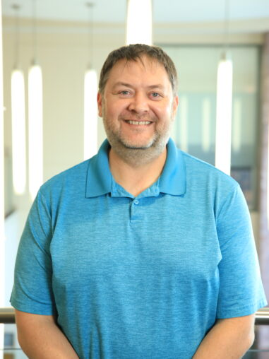

RED COLT
Remote Environmental Data Collection, Observation, and Logging Tool. An ongoing collaboration with Dan Whitten to build sensor systems that collect and log environmental data remotely.
Morningside University · Walker Science Center 140
Professor of Computer Science
Teaching code, building community, and asking what technology means for all of us.
I've been teaching computer science at Morningside University since 2001 — and I'm still as curious about it as I was when I wrote parallel algorithms on an Intel iPSC/860 Hypercube in 1994. My work spans the full width of the CS curriculum, from first-year computing concepts all the way to operating systems, networking, AI, and security.
Before returning to Morningside, I earned my M.S. in Computer Science from Iowa State and spent three years as a software engineer at Lockheed Martin's Air Traffic Management division, writing C for FAA offshore facilities. That mix of theory, systems work, and real-world deployment shapes how I teach: I want students to understand the machine and what it's for.
Outside the classroom I run the ACM Student Chapter, chair the Graduate Education Committee, direct the Esports program, and have collaborated with colleagues on research ranging from video game psychology to remote environmental sensing. I also teach Group Power and Group Blast at the Four Seasons Health Club, because apparently one classroom isn't enough.

A selection from more than 25 courses taught at Morningside since 2001, spanning introductory computing through graduate-level systems.
Foundations of AI including search, knowledge representation, machine learning, and natural language processing. Students implement classic algorithms and explore contemporary applications and ethical implications.
Principles and practice of securing computer systems and networks. Topics include cryptography, authentication, vulnerabilities, penetration testing, and the policy landscape surrounding cybersecurity.
Statistical thinking, data wrangling, visualization, and predictive modeling using Python. Students work with real datasets to answer questions in science, business, and the social sciences.
An introduction to web development covering HTML, CSS, JavaScript, and the principles of design and usability. Originally developed as a pilot course by Dean; now a core part of the CS curriculum.
Programming for resource-constrained hardware: microcontrollers, interrupts, timing constraints, and hardware/software interfaces. Students build real physical systems.
A broad survey of the social, ethical, legal, and scientific dimensions of information technology. Topics include privacy, intellectual property, digital rights, AI policy, and the future of work.
Active and completed research spanning environmental sensing, video game psychology, pedagogy, and parallel computing.
Remote Environmental Data Collection, Observation, and Logging Tool. An ongoing collaboration with Dan Whitten to build sensor systems that collect and log environmental data remotely.
A five-year study with Dr. Aaron Bunker and Dr. Brian McFarland investigating physiological and neurochemical responses to video game play, with a focus on violent versus non-violent content.
Founded with a Ver Steeg Research Grant (2009), the VIER lab supports interdisciplinary research on video games. A second grant in 2012 refreshed lab equipment for continued studies.
Ver Steeg Grant–funded project (2018) to set up computing infrastructure for Lila Mae's House, a Sioux City restoration center serving survivors of sex trafficking.
A multi-year collaboration with Dr. Susan Burns examining psychological and physiological responses to violent and non-violent video games, resulting in posters at APS conferences from 2008–2013.
NSF REU project (1994) at U. Missouri–Rolla: designed and implemented a parallel algorithm for image recognition on remotely sensed satellite images, running on an Intel iPSC/860 Hypercube in Parallel C.
Questions about courses, research collaborations, the ACM Student Chapter, or the Siouxland Robotics scene? I'd love to hear from you. My office is in Walker Science Center 140.
Professional Affiliations
ACM Member & Faculty Chapter Advisor (2002–Present)
Chair, Graduate Education Committee (2019–Present)
Chair, Woodbury County Information & Communication Council (2021–Present)